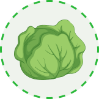
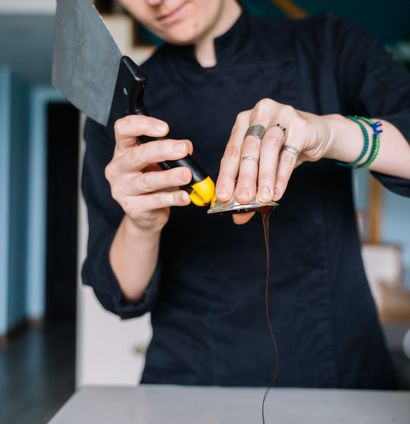
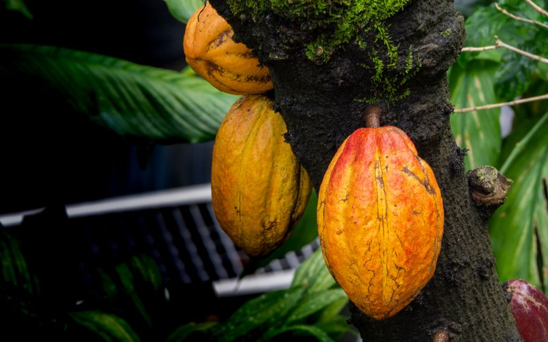

GBG
GBG
GBG
GBG
Global Business Group accompagne la transformation des filières agricoles à travers le conseil, la certification, la commercialisation durable et la transformation du cacao.

Une initiative qui valorise les produits locaux, soutient la diversification agricole et promeut une alimentation saine, responsable et connectée aux producteurs.
Le Restaurant Assiette Durable incarne la dimension alimentaire et consommateur de Global Business Group. Il valorise les productions issues du Diversification Package afin de créer des débouchés locaux et promouvoir une consommation plus durable.
Le Restaurant Assiette Durable valorise les produits issus de la diversification agricole. Il transforme les productions locales en expérience alimentaire responsable.

Promouvoir une alimentation durable tout en créant des débouchés économiques pour les producteurs engagés dans la diversification agricole.
Devenir un modèle de restauration responsable capable de relier producteurs, territoires, marchés locaux et consommateurs autour d'une alimentation durable, saine et créatrice de valeur.
Restaurant Assiette Durable donne une finalité concrète aux productions agricoles durables et aux cultures de diversification accompagnées par GBG.
Accompagne les producteurs
Cultures complémentaires
Mise en marché
Valorise dans l'alimentation
Le Diversification Package accompagne les producteurs de cacao dans la mise en place de cultures complémentaires. Le Restaurant Assiette Durable peut devenir un débouché concret pour ces productions.
Derrière chaque assiette, il y a un producteur, une terre, une culture, une communauté et une démarche durable.
Le Restaurant Assiette Durable valorise les productions issues du Diversification Package afin de donner une nouvelle valeur aux cultures vivrières et maraîchères associées à la filière cacao.


Soutenir des pratiques agricoles plus responsables.

Créer des revenus complémentaires pour les producteurs.

Mettre en avant produits vivriers et maraîchers.
Relier alimentation, santé et responsabilité.
 ProducteurCulture vivrièreMarché localAssiette
ProducteurCulture vivrièreMarché localAssietteUne cuisine pensée pour valoriser les produits durables.
Ingrédients issus de filières mieux organisées.
Offre culinaire alignée sur les disponibilités agricoles, à confirmer.
Connexion directe entre production locale et consommation urbaine.
Mise en valeur du travail des communautés agricoles.
Informer les consommateurs sur l'alimentation responsable.
Plat localLégumes et produits fraisImages recommandées : image-assiette-plat-local.jpg, image-assiette-legumes.jpg, image-assiette-cuisine.jpg, image-assiette-producteurs.jpg, image-assiette-table.jpg.

Producteurs, récoltes, marché et préparation en cuisine.

Dressage, saveurs locales et alimentation durable.

Ambiance restaurant et engagement communautaire.
Assiette Durable valorise les produits locaux et transforme la durabilité en expérience concrète.

Assiette Durable est le concept de restauration responsable du groupe GBG. Plus qu'un simple restaurant, c'est une vitrine vivante de l'engagement du groupe en faveur d'une alimentation saine, locale et durable.
Né du Diversification Package, Assiette Durable valorise les produits issus des filières certifiées du groupe — cacao, cultures vivrières et maraîchères — en proposant une cuisine créative qui met en avant le terroir ivoirien et les pratiques agricoles durables.
Nos ingrédients proviennent directement des producteurs certifiés par GBCC et commercialisés par SCMC. Chaque plat raconte l'histoire d'une agriculture durable.
Une cuisine équilibrée, sans produits chimiques, qui privilégie les aliments naturels, biologiques et de saison pour une alimentation saine.
Chaque repas contribue à soutenir les communautés agricoles, à promouvoir la biodiversité et à réduire l'empreinte carbone de notre alimentation.
Proposer une carte 100% basée sur des produits locaux, de saison et issus de l'agriculture durable.
Réduire le gaspillage alimentaire par une gestion optimisée des approvisionnements et la valorisation des surplus.
Éduquer les clients et partenaires aux enjeux de l'alimentation responsable et durable.
Garantir des prix justes aux producteurs locaux et favoriser les circuits courts.
Promouvoir la diversité des cultures et redécouvrir les saveurs oubliées du terroir ivoirien.
Former les jeunes chefs aux pratiques de la restauration durable et responsable.
Soupes de légumes du jardin, salades de saison aux graines locales, beignets de plantain aux épices du terroir
100% LocalAttiéké revisité, foutou igname aux sauces du terroir, kedjenou de poulet fermier, braisé de poisson au manioc
De saisonFondant au chocolat KIC, mousse au cacao ivoirien, tartelette SCMC Chocolaterie, glace artisanale au beurre de cacao
SCMC ChocolaterieChaque assiette servie chez nous reflète nos engagements concrets en faveur d'une alimentation responsable et d'un impact positif sur les communautés.

Découvrez tout ce qu'il faut savoir sur notre concept de restauration durable.
Réserver une tableNous sommes le seul restaurant en Côte d'Ivoire directement intégré à un groupe agricole. Nos ingrédients viennent des producteurs certifiés par GBCC, commercialisés par SCMC — vous connaissez l'histoire de chaque produit dans votre assiette.
Nos desserts et créations chocolatées sont élaborés avec les produits de SCMC Chocolaterie et les semi-finis de KIC. Du cacao ivoirien transformé localement et travaillé par nos chefs — une traçabilité totale de la fève à l'assiette.
Oui, notre carte propose de nombreuses options végétariennes et véganes, mettant en valeur la richesse des produits maraîchers et vivriers issus du Diversification Package. Les légumes de saison sont au cœur de notre cuisine.
Absolument ! Nous accueillons des événements privés et professionnels : dégustations de chocolat, ateliers culinaires durables, séminaires d'entreprise et réceptions. Contactez-nous pour un devis personnalisé.
Assiette Durable est née du Diversification Package, un programme innovant du groupe GBG qui encourage les producteurs de cacao à diversifier leurs cultures. En intégrant les produits maraîchers, les vivriers et les cultures alternatives dans nos menus, nous créons un débouché concret pour cette diversification et contribuons à la sécurité alimentaire.
Découvrir nos projetsAssiette Durable est l'aboutissement de la chaîne de valeur du groupe GBG. Les produits certifiés par GBCC, commercialisés par SCMC et transformés par KIC trouvent leur expression culinaire dans nos assiettes. Les chocolats de SCMC Chocolaterie complètent notre carte de desserts.